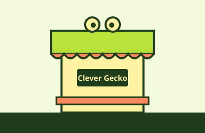

Find Clever Gecko

You can find our kiosk in Center Court, right next to the main fountain. Look for the bright green sign with the smiling gecko on it.
Clever Gecko's Stick-UpsCenter Court, Stickyfoot Mall
1200 Cling Avenue
Charlotte, NC 28202
The mall has free parking and a bus stop at the east entrance. Once you are inside, walk straight toward the fountain and you will spot us.